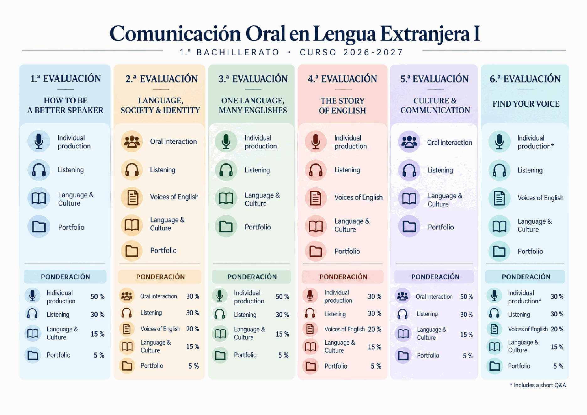
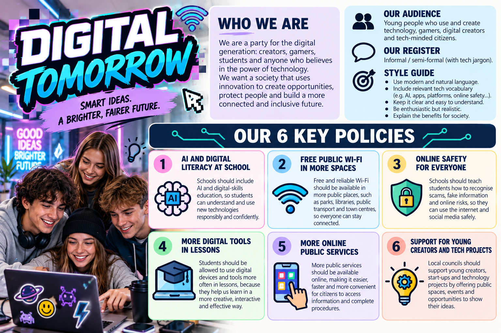
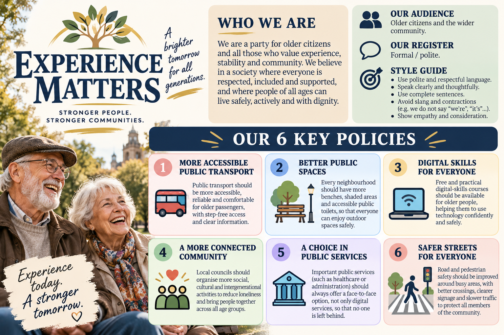
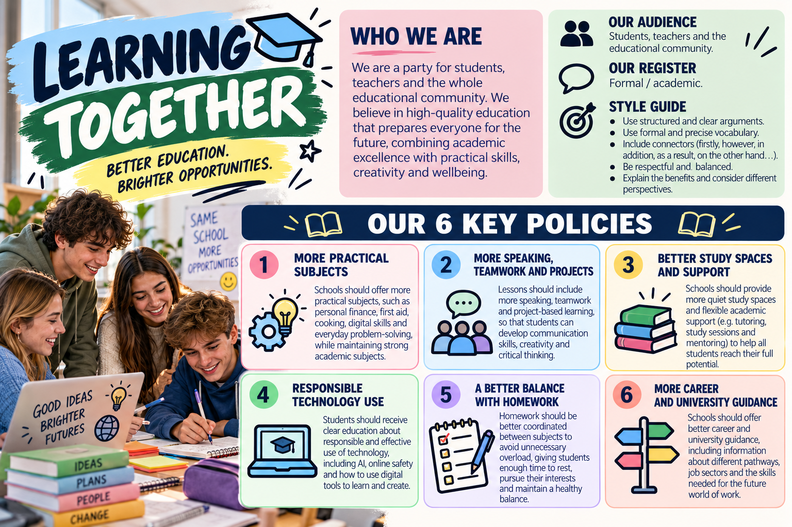
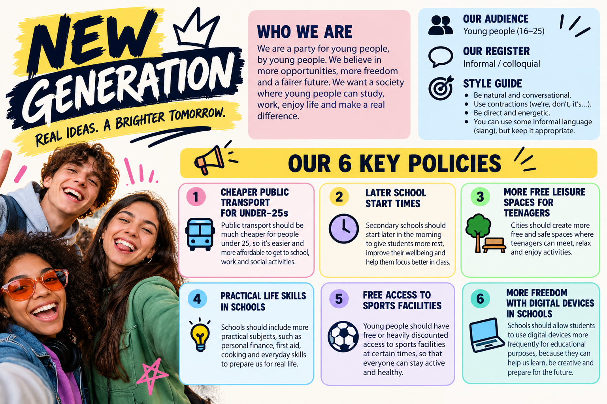
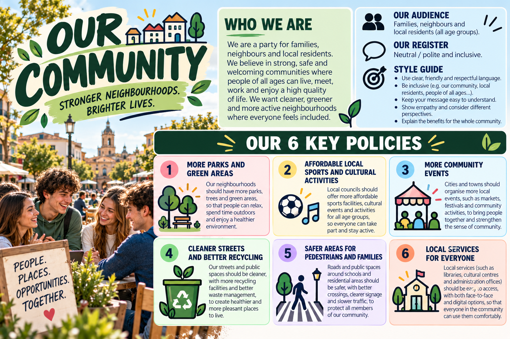
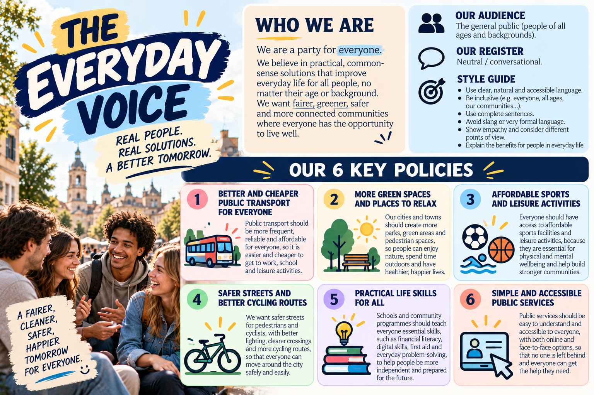
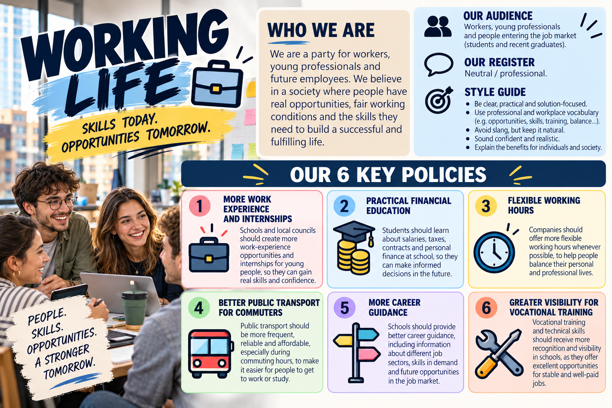

How to be a better speaker
- Individual production
- 50%
- Listening
- 30%
- Language & Culture
- 15%
- Portfolio
- 5%
Find our projects, activities and course information here. Choose a space below to get started.
Open our improvisation activity and put your spoken English into practice.
Open challenge Opens in a new tab Course informationFind out how the different parts of the course contribute to your grade.
View assessment Class projectThe project directory: sessions, party materials and everything we develop during the campaign.
Enter the project Year-long documentaryThe full project guide: chapters, checkpoints, research, teamwork and assessment.
Open project guideYour assessment breakdown for each of the six assessment periods in Comunicación Oral en Lengua Extranjera I.
* Includes a short Q&A.

Your starting point for the elections project. Find the sessions and materials you need as the campaign develops.
Our first session: understand your party, develop policies and explore possible alliances.
Open sessionExplore the seven parties, their registers and six key policies.
Meet the partiesOpen a session to see its instructions and work through the activities with your classmates.
New sessions will appear here as the course develops.
Seven parties, seven perspectives. Open your party’s infographic to read its identity, audience, register and six key policies. Select any image to view it full size.







A place for speaking activities, challenges and classroom games.
More activities will be added throughout the course.
Know your party. Defend your ideas. Find common ground.
Work in English, use keywords for notes and respect your party’s register.
Look at your party’s infographic and briefly discuss it together.
Agree on the central idea that represents your party. Then share it with the other parties.
Discuss these four questions for each of your six policies. Write keywords only.
Suggest different ideas, discuss them and reach a consensus on two new policies.
Split up and meet representatives from other parties. Each round lasts five minutes. Follow your teacher’s instructions for changing partners.
Return to your party. Everyone reports what they discovered in their meetings.
Finish with a 30-second campaign statement to the class.
One community · Three chapters · One documentary.
The complete guide to developing your project across the school year.
Evaluations 1, 3 and 5 are formative checkpoints. Evaluations 2, 4 and 6 complete each chapter and are assessed. Everyone must have an identifiable spoken contribution in every evaluation.
Year-long documentary project
COMMUNITY
IDENTITY
SOUND
HISTORY
CULTURE
One community · Three chapters · One documentary
27 students · 5 teams · 6 evaluations
1º Bachillerato · 2026–2027
What you will build across the whole school year.
27
STUDENTS
5 teams: 3 groups of 5 + 2 groups of 6
1
COMMUNITY
The same community / variety all year
3
CHAPTERS
Each chapter is developed across exactly two evaluations
≥5
MIN / EVAL
At least 5 minutes of new documentary material every evaluation
PROJECT WEIGHT: 20% IN EVALUATIONS 2, 4 AND 6
One project developed progressively: E1/E3/E5 are formative checkpoints; E2/E4/E6 complete each chapter and are assessed.
Each chapter lasts two evaluations. Every evaluation adds a new 5+ minute segment.
EVALUATION 1
EVALUATION 2
EVALUATION 3
EVALUATION 4
EVALUATION 5
EVALUATION 6
CHAPTER 1 · COMMUNITY & IDENTITY
E1: Meet the Community · E2: Language & Identity
CHAPTER 2 · VOICE & HISTORY
E3: How They Speak · E4: The Story of Their English
CHAPTER 3 · CULTURE & COMMUNICATION
E5: Beyond the Words · E6: What Can We Learn?
Minimum by the end of each chapter: 10 minutes of new material (5+ minutes in each evaluation).
E1 / E3 / E5 = formative development and feedback. E2 / E4 / E6 = completed chapter submission worth 20%. Across the year: at least 30 minutes of documentary material.
Each chapter explores the same community from a different angle. Each chapter contains two evaluation segments.
1
COMMUNITY & IDENTITY
Who are these people — and how does identity shape their English?
E1 · Meet the Community E2 · Language & Identity
2
VOICE & HISTORY
What does their English sound like — and why did it develop that way?
E3 · How They Speak E4 · The Story of Their English
3
CULTURE & COMMUNICATION
How do culture and social conventions affect communication?
E5 · Beyond the Words E6 · What Can We Learn?
Each team ranks its top three choices; the teacher approves the final distribution.
1. Scotland
Scottish English · Scots · Gaelic contact
2. Ireland
Hiberno-English · Irish influence
3. Jamaica
Jamaican English · Creole · identity
4. Nigeria
Nigerian English · Pidgin · multilingualism
5. India
Indian English · multilingual contact · colonial history
Choose a community with enough reliable sources, history, linguistic variation and cultural material.
Only five communities will be selected, so groups will not all work on the same topic.
6. Singapore
Singapore English / Singlish · multilingual society
7. South Africa
Multiple English varieties · language contact
8. Australia
Australian English · identity · regional/social variation
9. New Zealand
New Zealand English · Māori influence
10. African American English (USA)
History · identity · sound · social meaning
Your first choice is not guaranteed: the final distribution must keep the five documentaries varied.
Five teams: three groups of 5 and two groups of 6.
1 · SHARED SPACE
One folder for research, source log, outlines, recordings, visuals and final exports.
2 · SOURCE LOG
Record every useful source from the beginning. Do not rebuild the bibliography at the end.
3 · FLEXIBLE ROLES
Research, presenting, editing, fact-checking and visuals can rotate between evaluations.
4 · EVERYONE SPEAKS
Every member must have an identifiable spoken contribution in every evaluation.
5 · EVERYONE UNDERSTANDS
No “editor-only” student. You should understand the chapter and be able to answer questions.
Roles organise the work; they do not remove anyone’s responsibility to research, speak and understand.
Use the same cycle every time so the project stays manageable.
1
RESEARCH
Find reliable information
2
SELECT
Choose the strongest ideas
3
OUTLINE
Build a clear story
4
REHEARSE
Practise explaining
5
RECORD
Speak clearly and naturally
6
EDIT
Make it easy to follow
7
SUBMIT
Include sources & credits
8
IMPROVE
Use feedback next time
Do not start by recording. A strong chapter begins with a clear idea of what the audience should understand.
The documentary is oral, but the content still has to be trustworthy.
GOOD PLACES TO START
Official institutions Universities / academic projects Museums / archives Reputable media Dictionaries / language resources
CHECK BEFORE USING
Who created it? Is the date relevant? Can the claim be verified elsewhere? Is it fact, interpretation or opinion?
KEEP A SOURCE LOG
Title / organisation Link What you used it for Image / clip source Final credits
Do not build a chapter from one random website, a single TikTok or an AI-generated summary.
Research → understand → select → explain in your own words.
An evaluation segment needs a clear message — not a spoken list of facts.
HOOK
Give the audience a reason to listen.
KEY IDEA 1
Explain one important point.
KEY IDEA 2
Add a second idea that moves the story forward.
REAL EXAMPLE
Use a map, clip, quote, image or language sample.
WHY IT MATTERS
Explain what the audience should understand.
CLOSING / TRANSITION
Finish clearly and lead into what comes next.
The 5-minute minimum is not a target to fill with extra facts: every minute should have a purpose.
Guiding question: WHO ARE THESE PEOPLE, AND HOW DOES IDENTITY SHAPE THEIR ENGLISH?
EVALUATION 1 · MEET THE COMMUNITY
• Where is the community located? • Who are the people / what defines the community? • What role does English play there? • Which facts are essential before we go deeper? • Why is this community worth following?
EVALUATION 2 · LANGUAGE & IDENTITY
• Age / generation differences • Social or professional variation • Formal vs informal language when relevant • Slang / identity markers that genuinely matter • One concrete example of language expressing identity
By the end of E2, Chapter 1 should feel complete: community + identity, ready to move into how the variety sounds.
Guiding question: WHAT DOES THEIR ENGLISH SOUND LIKE — AND WHY DID IT DEVELOP THAT WAY?
EVALUATION 3 · HOW THEY SPEAK
• Accent vs dialect — be precise
• 2–3 pronunciation features worth noticing
• Vocabulary / expressions that genuinely matter
• Standard vs local variation
• One short authentic language sample
EVALUATION 4 · THE STORY OF THEIR ENGLISH
• Where did English in this community come from?
• Migration, colonisation, contact or political change
• Which other languages influenced it?
• Link historical causes to features from E3
• Finish by connecting history, sound and identity
E3 and E4 each add at least 5 minutes of NEW material. By the end of E4, Chapter 2 should be complete and coherent.
Guiding question: HOW DO CULTURE AND SOCIAL CONVENTIONS AFFECT COMMUNICATION?
EVALUATION 5 · BEYOND THE WORDS
• Politeness and ways of requesting / refusing / disagreeing • Small talk and conversational expectations • Directness vs indirectness when relevant • Tone, gestures, eye contact or personal space
EVALUATION 6 · WHAT CAN WE LEARN?
• One realistic intercultural misunderstanding • How could it be avoided? • What can outsiders learn from this community? • Build the final conclusion of the documentary • Prepare for the live Q&A / defence
E5 and E6 each add at least 5 minutes of NEW material. Talk about tendencies and conventions — not stereotypes about what “everyone” is like.
Every evaluation adds 5+ minutes. Only E2, E4 and E6 are graded as Project Documentary (20%).
≥ 5 MINUTES / EVAL
Add at least five minutes of NEW documentary material in every evaluation.
EVERYONE SPEAKS
All 5/6 members need an identifiable spoken contribution in each evaluation.
SOURCES INCLUDED
Keep the source log updated and credit information, images and external media used.
E1 / E3 / E5: 5+ minutes of progress for formative feedback. E2 / E4 / E6: add 5+ more minutes, complete the chapter and submit it for assessment.
Feedback from each checkpoint should visibly improve the completed chapter.
This is an Oral Communication project — the video is the vehicle, not the objective.
ENGLISH ONLY
All spoken content must be in English.
NO READING
Prepare carefully, but do not read a full script.
EXPLAIN
Understand it well enough to explain it in your own words.
BE CLEAR
Pace, volume and intonation must support understanding.
EVERYONE SPEAKS
Every member needs an identifiable contribution.
BE NATURAL
Avoid flat, memorised delivery.
RE-RECORD
If the audio or delivery is weak, record it again.
OWN YOUR PART
Be ready to answer questions about your section.
A beautiful edit cannot compensate for weak spoken communication.
You are not being asked to become professional filmmakers.
CLEAR AUDIO
The voice must always be easy to hear.
READABLE VISUALS
Use titles, maps, images and keywords that can be understood quickly.
SHORT EXTERNAL CLIPS
Only use extracts when they genuinely help explain something.
CONSISTENT STYLE
Use similar titles, fonts and transitions across the three chapters.
MUSIC = SECONDARY
Background music must never compete with the speaker.
CREDITS & SOURCES
Credit information, images and external media at the end.
Simple + clear + coherent beats complicated + flashy + difficult to follow.
Project Documentary = 20% in Evaluations 2, 4 and 6.
CONTENT & RESEARCH
Accurate, relevant information supported by reliable sources.
ORAL COMMUNICATION
Clear, natural and understandable spoken English.
ORGANISATION
A segment with a clear purpose, progression and ending.
LANGUAGE & CULTURE
Relevant linguistic / sociocultural explanation for that stage.
TEAMWORK
The group works as one documentary, not separate mini-presentations.
INDIVIDUAL CONTRIBUTION
Your own spoken contribution is visible and identifiable.
Each assessed chapter should show clear improvement from the previous checkpoint.
E6 completes Chapter 3 and the whole documentary. The project counts for 20% of the evaluation.
REWATCH
Review all feedback.
IMPROVE
Correct weak explanations, pronunciation, sources or visuals.
CONNECT
Add transitions between the three chapters.
UNIFY
Make titles, audio, visuals and credits consistent.
CONCLUDE
Record a strong final conclusion.
DEFEND
Live Q&A: be ready to answer without a script.
Final documentary: approximately 30 minutes of polished material + live defence / Q&A of about 5–8 minutes per group.
The final evaluation rewards integration and improvement. You may trim repetition, but the three chapters must remain complete and coherent.
Use this before every project checkpoint — formative or assessed.
✓
We answer the guiding question for the active chapter.
✓
We added at least 5 minutes of new material.
✓
We selected the most relevant information — not everything we found.
✓
Our claims come from reliable sources and the source log is updated.
✓
Every member has an identifiable spoken contribution.
✓
Nobody is simply reading a full script.
✓
The English is clear enough to understand without subtitles.
✓
Images / clips support the explanation rather than distract from it.
✓
The segment has a clear beginning, development and ending.
✓
We checked audio, titles and credits before exporting.
If you cannot tick a box honestly, the chapter is not ready yet.
Do not leave class with “we’ll decide later”. Leave with a concrete plan.
1
CONFIRM THE TEAM
Know exactly who your 5/6 members are.
2
RANK 3 COMMUNITIES
Choose your top three options from the approved list.
3
GET APPROVAL
The teacher confirms the final community for each team.
4
CREATE THE SHARED SPACE
Folder + source log + working document.
5
ANSWER 3 BASIC QUESTIONS
Where? Who? What role does English play?
6
SELECT E1 IDEAS
Choose what the audience genuinely needs to know.
7
ASSIGN SPOKEN PARTS
Everyone needs a real contribution.
8
SET A MINI-DEADLINE
Decide what must be ready before the next project lesson.
One community · Three chapters · Six evaluations · One documentary